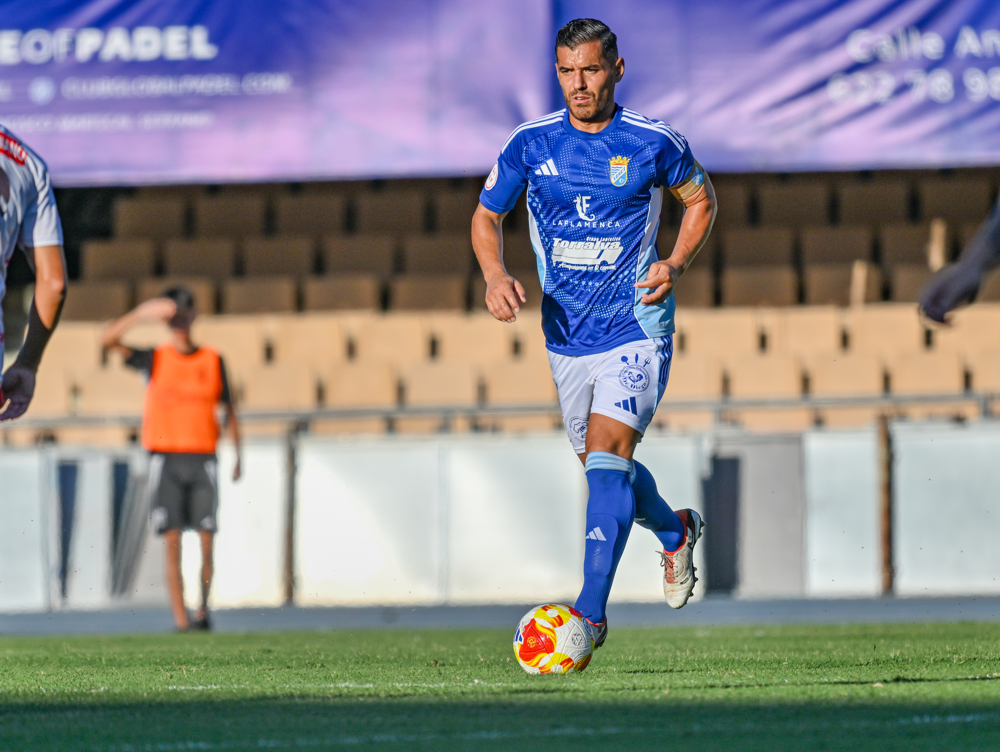

Josete extends his stay at Xerez CD for the 2026/27 season

Foto: PuroXerecismoThe centre-back from Elche will play his third consecutive season as a blue-and-white, having been an important player in the Xerez back line and a mainstay of the dressing room.
Xerez CD have confirmed the continuity of José Antonio Malagón Rubio, 'Josete', a centre-back born in Elche in 1988, who will continue wearing the blue-and-white shirt during the 2026/27 season, his third consecutive campaign with the Jerez-based club.
The experienced defender has been an important player in the Xerez back line throughout last season, bringing toughness, aerial ability and the capacity to organise the team from the back. Beyond what he offers on the pitch, Josete has also become a mainstay of the dressing room, thanks to his experience and his influence on the team's day-to-day life.
His renewal gives continuity to one of the most valued pieces of the blue-and-white project, both on and off the pitch, ahead of the 2026/27 season.
← Back to home